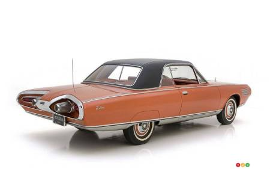

L'histoire de la Chrysler Turbine Car remonte aux années 1960, lorsque Chrysler Corporation a entrepris un projet ambitieux pour explorer l'utilisation de moteurs à turbine à gaz comme alternative aux moteurs à combustion interne traditionnels. Voici les points clés de cette histoire :
Développement du Projet :
Le développement de la Chrysler Turbine Car a débuté au début des années 1960. L'idée était d'utiliser des moteurs à turbine à gaz, qui fonctionnent selon un principe différent des moteurs à pistons conventionnels. Les moteurs à turbine à gaz compriment l'air, le mélangent avec du carburant, puis allument le mélange pour produire un échappement à haute vitesse qui entraîne une turbine pour générer de l'énergie.
Production de Prototypes :
Chrysler a fabriqué un total de 50 prototypes de la Turbine Car. Ces véhicules étaient équipés de moteurs à turbine à gaz et ont été soumis à des tests intensifs pour évaluer leur performance, leur durabilité et leur faisabilité pour une production de masse.
Campagne de Relations Publiques :
Chrysler a mis en œuvre une stratégie de marketing unique pour la Turbine Car. La société a sélectionné un groupe diversifié d'individus pour conduire les voitures, permettant à des personnes de milieux différents d'expérimenter cette nouvelle technologie. Cela faisait partie d'un effort pour susciter l'intérêt du public et créer une perception positive.
Programme d'Essais par le Public :
En 1966, Chrysler a lancé un programme d'essais limité, permettant à un groupe restreint de personnes de conduire les Turbine Cars pendant plusieurs mois. Les retours de ce programme ont été précieux pour évaluer les aspects pratiques de la possession et de l'exploitation de véhicules à turbine à gaz.
Malgré des retours positifs et une technologie innovante, le projet de la Chrysler Turbine Car n'a pas abouti à une production de masse pour plusieurs raisons :
- Facteurs Économiques : Le coût de fabrication des moteurs à turbine à gaz était relativement élevé par rapport aux moteurs à pistons traditionnels, rendant difficile la justification d'une production de masse d'un point de vue économique.
- Efficacité Énergétique : Les moteurs à turbine à gaz n'étaient pas aussi efficaces sur le plan énergétique à l'époque, et la crise pétrolière des années 1960 a mis en lumière l'importance de l'efficacité énergétique des véhicules.
- Préoccupations Environnementales : Les moteurs à turbine produisaient des niveaux d'émissions plus élevés par rapport aux moteurs à pistons contemporains, et les normes en matière d'émissions devenaient de plus en plus strictes.
Bien que le projet de la Chrysler Turbine Car n'ait pas abouti à un produit commercial, il demeure un chapitre fascinant de l'histoire de l'automobile et un exemple d'expérimentation ingénieuse en ingénierie. Certains des prototypes de véhicules ont été préservés et peuvent être trouvés dans des musées et des collections privées.